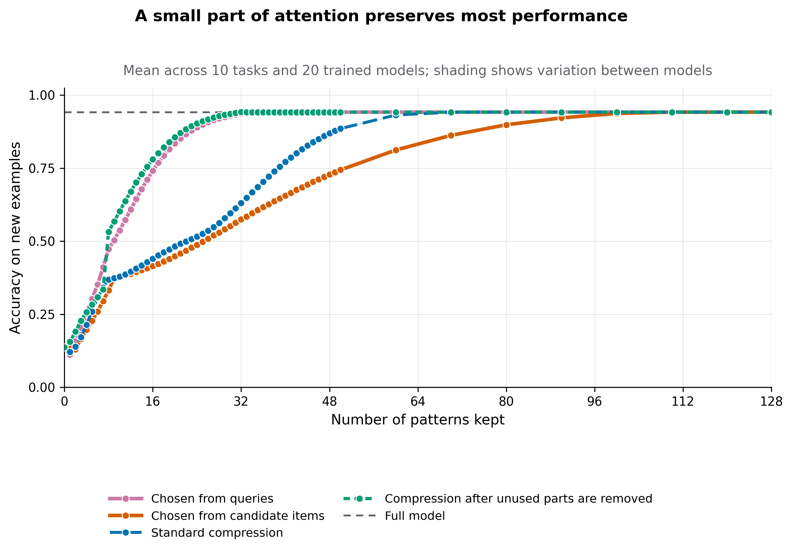

A neural network may contain many learned connections while using only a small, task-specific part for one behavior. In this blog post, I show that a simple attention model can preserve almost all of its performance using a much lower-rank version of its attention rule. This links what the model does (function) to how its learned connections are organized (structure). It may also give us the backbone of a method for future causal tests in LLMs.
The idea from neuroscience
Some early interpretability work searched for individual artificial neurons associated with particular facts. Neuroscience, too, once searched for single neurons that represented a stimulus, place, or choice. The famous “Jennifer Aniston neuron” is a well-known example of this single-neuron view. More recent research instead argues that many computations are better understood as coordinated patterns across groups of neurons.
How that coordination is achieved, however, has remained a mystery for a long time. We refer to this as the problem of connecting structure (parameters) to function (computation). Recent theoretical work on low-rank recurrent neural networks (RNNs) suggests that these shared activity patterns, also called “latent variables,” are mathematically reflected in how neurons are connected to each other. In these theories, the matrix rank of the connections becomes a fundamental unit of neural computation in that it counts how many independent patterns the connections can carry.
In this formulation, we ask not only which latent variables support a computation, but also how the parameters of the model give rise to those variables. My PhD work studies this link across several kinds of biologically plausible RNNs and explains several disjointed empirical phenomena under a few common basic principles.
Of course, the inverse problem is at least as interesting, if not more practically relevant. A model may contain many parameters that have nothing to do with the computation at hand. Can its activity tell us which parts matter? In recent work, we studied a method based on the observed activity of units in a network to answer this question in RNN models of neural computation. Here I extend this result to a simple attention model and ask: can examples from a task tell us which part of a trained model is enough to preserve what it does?
A brief introduction to the method
A neural-network layer receives a pattern of activity, which we call x. Its learned connections, W, transform that activity into Wx, which then passes through other types of transformations. In biology, x corresponds to neural activity and W to the strengths of the connections between neurons. With these defined, the overall question is deceptively simple: When a network performs one task, which parts of W actually matter?
It turns out that one plausible answer is simple. One should simply collect all patterns of activity {x(t)} observed during a particular task. A Gram matrix, Gx = ⟨xxT⟩, summarizes these observations. Its leading directions are the activity patterns that the task uses most, making them natural candidates for the parts of W that matter. More on this connection can be found here.
Attention, unlike traditional RNNs, has two types of inputs, which enables a trivial extension of the Gram matrix. An attention layer compares a query q with a key k through a matching rule of the form qTMk, where M is a combination of the learned key and query matrices. The extension of the method involves building one Gram matrix from the queries and another from the keys. One then uses their leading directions to decide which patterns of the trained matrix M to keep.
A small attention test
Imagine giving a model one request and 64 index cards. Attention compares the request with every card and uses the strongest matches to choose an answer. I trained 20 copies of this small model, from different random starting points, on ten artificial tasks simultaneously. Some tasks required an exact match; others used incomplete information, priorities, or a vote. More methodological details are available in the public GitHub repository. This test deliberately does not use a language model. Rather, the simplicity of a single attention layer lets us study and extend the connection between structure and function.
The query and key parameters work together to produce a rule for matching each request to the cards. I studied this combined rule, then tested how much of it I could remove while preserving the answers. Here, rank counts how many independent matching patterns are kept. I used the observed queries or keys to decide which patterns to keep, then tested the newly constructed “simpler” attention layer (i.e., one with a much lower rank) on new trials.
How to read Figure 1: moving right means keeping more of the original attention rule. Moving up means answering more test examples correctly.

At rank 24, the version chosen from queries was correct 89% of the time, close to 94% for the full model. Standard compression using a singular value decomposition, which looked only at the learned weights but not the activations, reached 52%. By design, the artificial inputs never use some available patterns. I therefore added a new comparison, which used the Gram matrices defined on keys and queries. Specifically, I removed the parts of the rule that no query or key could use, i.e., those directions that were associated with the null-space of the Gram matrices. SVD-based reconstruction on this “task-specific” matrix then reached 90% at rank 24, showing that a rank-24 reconstruction of the combined query–key scoring rule preserved most of the model's average performance.
What is interesting here? The combined matching rule across all 10 tasks could technically live in a 128-dimensional space. Yet most of the model's performance could be preserved with only 24 task-selected patterns. Most importantly, we selected those patterns without any additional training, using the activity observed during normal task operation and the already-trained attention rule. Finally, the repository contains an additional control showing that the useful query-selected directions depended on the task: after matching the explicit task tag, directions selected from other tasks transferred poorly.
Why this could matter for LLM safety
This experiment contains no language and no unsafe behavior. Some of its task-specific structure was built into the artificial data. It is a controlled proof of principle, not evidence that an LLM can already be steered this way. Still, the connection to LLM safety is not far-fetched, e.g., one would certainly wish to identify low-rank components of learned parameters that are causally linked to specific (harmful) behaviors.
The next step of this research is to test necessity and selectivity in a pretrained language model. We could use natural-language prompts to find a small part linked to a task, then remove or strengthen it. The hope is to find a plausible steering target. This is related to, but distinct from, low-rank adaptation, which learns new low-rank updates during training. Here, the goal is to identify an existing, task-linked part of a trained model. If the method transfers, candidate directions could be estimated from activations collected during ordinary forward passes, without retraining the model.